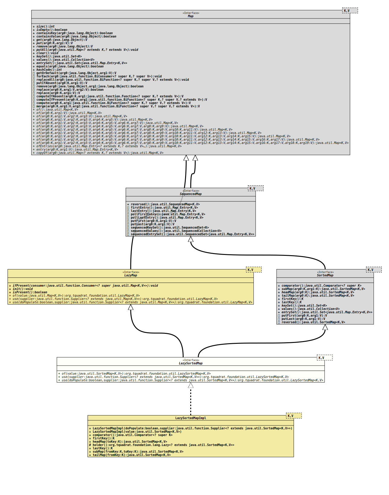

Module org.tquadrat.foundation.util
Package org.tquadrat.foundation.util
Interface LazySortedMap<K,V>
- Type Parameters:
K- The type of keys maintained by this map.V- The type of mapped values.
- All Superinterfaces:
LazyMap<K,,V> Map<K,,V> SequencedMap<K,,V> SortedMap<K,V>
- All Known Implementing Classes:
LazySortedMapImpl
@ClassVersion(sourceVersion="$Id: LazySortedMap.java 1032 2022-04-10 17:27:44Z tquadrat $")
@API(status=STABLE,
since="0.0.5")
public sealed interface LazySortedMap<K,V>
extends LazyMap<K,V>, SortedMap<K,V>
permits LazySortedMapImpl<K,V>
The interface for a
SortedMap
that will be initialised only when required.- Author:
- Thomas Thrien (thomas.thrien@tquadrat.org)
- Version:
- $Id: LazySortedMap.java 1032 2022-04-10 17:27:44Z tquadrat $
- Since:
- 0.0.5
- See Also:
- UML Diagram
-

UML Diagram for "org.tquadrat.foundation.util.LazySortedMap"
{kind=link}
-
Nested Class Summary
-
Method Summary
Static MethodsModifier and TypeMethodDescriptionstatic <K,V> LazySortedMap <K, V> Creates a newLazySortedMapinstance that is already initialised.static <K,V> LazySortedMap <K, V> Creates a newLazySortedMapinstance that uses the given supplier to initialise.static <K,V> LazySortedMap <K, V> Creates a newLazySortedMapinstance that uses the given supplier to create the internal map, but that supplier will not populate the map with entries.Methods inherited from interface java.util.Map
clear, compute, computeIfAbsent, computeIfPresent, containsKey, containsValue, equals, forEach, get, getOrDefault, hashCode, isEmpty, merge, put, putAll, putIfAbsent, remove, remove, replace, replace, replaceAll, sizeMethods inherited from interface java.util.SequencedMap
firstEntry, lastEntry, pollFirstEntry, pollLastEntry, sequencedEntrySet, sequencedKeySet, sequencedValues
-
Method Details
-
of
Creates a newLazySortedMapinstance that is already initialised.- Type Parameters:
K- The type of keys maintained by this map.V- The type of mapped values.- Parameters:
value- The value.- Returns:
- The new instance.
-
use
@API(status=STABLE, since="0.0.5") static <K,V> LazySortedMap<K,V> use(Supplier<? extends SortedMap<K, V>> supplier) Creates a newLazySortedMapinstance that uses the given supplier to create the internal map, but that supplier will not populate the map with entries.- Type Parameters:
K- The type of keys maintained by this map.V- The type of mapped values.- Parameters:
supplier- The supplier that initialises the new instance ofLazySortedMapwhen needed.- Returns:
- The new instance.
-
use
@API(status=STABLE, since="0.0.5") static <K,V> LazySortedMap<K,V> use(boolean doPopulate, Supplier<? extends SortedMap<K, V>> supplier) Creates a newLazySortedMapinstance that uses the given supplier to initialise.- Type Parameters:
K- The type of keys maintained by this map.V- The type of mapped values.- Parameters:
doPopulate-trueif the provided supplier will put values to the map on initialisation,falseif it will create an empty map.supplier- The supplier that initialises the new instance ofLazySortedMapwhen needed.- Returns:
- The new instance.
-